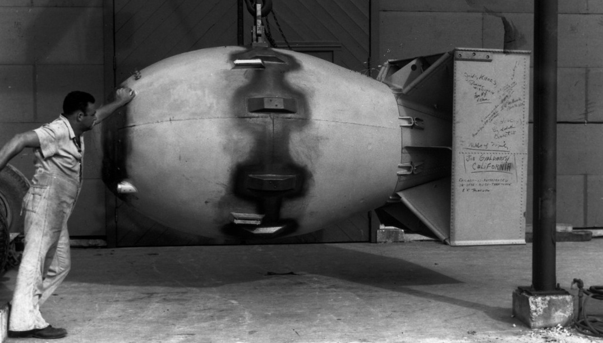
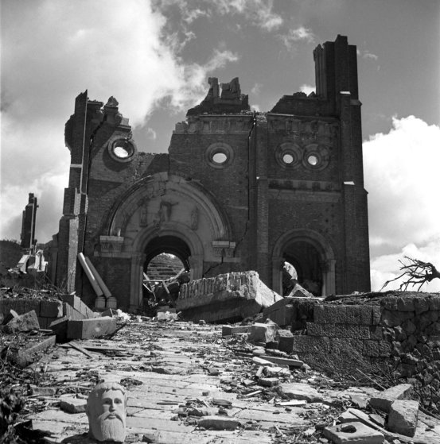

Bombele Atomice

La sfarsitul celui de-al Doilea Razboi Mondial, daca în Europa lucrurile pareau sa se încline în favoarea Puterilor Aliate prin înfrangerea Germaniei hitleriste, pe Frontul din Pacific situatia era mai diferita, Imperiul Japonez dand dovada de o tenacitate iesita din comun. Încetarea razboiului depindea de înfrangerea Japoniei, dar optiunile erau putine în acest sens. Americanii aveau de ales între trimiterea de noi trupe de soldati într-o invazie care însemna moartea sigura a milioane de oameni si între folosirea unei arme noi de distrugere în masa care însemna eficienta si paradoxal, crutarea multor vieti omenesti.Bombardarea atomica a celor doua orase japoneze Hiroshima si Nagasaki a reprezentat unul dintre cele mai dezbatute si criticate decizii pe care le-au luat americanii în materie de politica externa. Daca din punct de vedere politic aceasta decizie a intrat într-un colt de umbra prin justificarea potrivit careia razboiul impunea luarea unor masuri extreme, din punct de vedere moral, moartea unui numar prea mare de civili japonezi nu a putut fi uitata, nici chiar de opinia publica americana.
 Faptul ca în Germania se descoperise fisiunea nucleara, întarita de un raport al serviciilor secrete britanice (M.I.6), conform caruia, Germania era interesata de fabricile de apa grea din Norvegia, îi nelinistea pe americani. Îngrijorat de modul în care Adolf Hitler, persecuta evreii din Europa, si a posibilitatii crearii unei bombe nucleare, fizicianul maghiar-evreu Leó Szilárd, i-a trimis fizicianului Albert Einstein, care la randul lui, a retrimis scrisoare Presedintelui SUA Franklin D. Roosevelt, o scrisoare, prin care îl avertizeaza de intentiile Germaniei . Scrisoarea primita în august 1939, a alarmat autoritatile, care au pus bazele Proiectului Manhattan, proiect la care a si lucrat.
Faptul ca în Germania se descoperise fisiunea nucleara, întarita de un raport al serviciilor secrete britanice (M.I.6), conform caruia, Germania era interesata de fabricile de apa grea din Norvegia, îi nelinistea pe americani. Îngrijorat de modul în care Adolf Hitler, persecuta evreii din Europa, si a posibilitatii crearii unei bombe nucleare, fizicianul maghiar-evreu Leó Szilárd, i-a trimis fizicianului Albert Einstein, care la randul lui, a retrimis scrisoare Presedintelui SUA Franklin D. Roosevelt, o scrisoare, prin care îl avertizeaza de intentiile Germaniei . Scrisoarea primita în august 1939, a alarmat autoritatile, care au pus bazele Proiectului Manhattan, proiect la care a si lucrat.
Little Boy a fost rodul Proiectului Manhattan, un program american ambitios care înca din 1939 urmarea dezvoltare primei arme nucleare. Proiectul a fost demarat ca un raspuns la zvonurile, cum ca germanii lucreaza la o bomba atomica. În urma atacului japonezilor din 1942 asupra flotei americane aflata la baza navala Pearl Harbour si implicarea Americii în Al Doilea Razboi Mondial, Statele Unite ale Americii împreuna cu aliatii sai Regatul Unit si Canada au accelerat demersurile de creare a bombei. Era o bomba cu încarcatura de uraniu 235, prin bombardarea cu neutroni lenti avea loc o reactie nucleara în lant, generator de caldura, cu un efect devastator. Dezvoltarea primelor prototipuri si experimente au fost facute la începutul anului 1943, imediat dupa deschiderea Laboratorului National Los Alamos, parte componenta a Proiectului Manhattan. Initial bomba era de tip „pistol”, ulterior, în aprilie 1944, s-a descoperit ca fisiunile spontane ale uraniului puteau fi folosite mai eficient în alte tipuri de bombe.
 Pentru realizarea bombei, s-a folosit o tehnologie simpla care a constat în ciocnirea a doua blocuri de uraniu 235 în urma careia, se atingea masa critica pentru a declansa fisiunea. Prin urmare, bomba nu a fost testata, ulterior dovedidu-se ca implozia din Testul Trinity si apoi cea de la Nagasaki a fost mult mai eficient. Concluzia specialistilor, a fost ca era nevoie de mai putin material fisionabil si a permis utilizarea de plutoniu 239. Mai mult decat atat, aceasta bomba a fost extem de periculoasa datorita celor doua blocuri de uraniu care s-ar fi putut ciocni accidental.
Pentru realizarea bombei, s-a folosit o tehnologie simpla care a constat în ciocnirea a doua blocuri de uraniu 235 în urma careia, se atingea masa critica pentru a declansa fisiunea. Prin urmare, bomba nu a fost testata, ulterior dovedidu-se ca implozia din Testul Trinity si apoi cea de la Nagasaki a fost mult mai eficient. Concluzia specialistilor, a fost ca era nevoie de mai putin material fisionabil si a permis utilizarea de plutoniu 239. Mai mult decat atat, aceasta bomba a fost extem de periculoasa datorita celor doua blocuri de uraniu care s-ar fi putut ciocni accidental.
 In dimineata zilei de 6 august 1945, la ora 8:15, bombardierul Enola Gay, pilotat de Colonelul Paul Tibbets de la baza aeriana 393d Bomb Squadron, Missouri Statele Unite, lanseaza bomba deasupra orasul japonez Hiroshima. Cu o lungime de 3 metri si un diametru de 71 cm, bomba cantarea 4.000 kg, din care 64 kg reprezenta uraniul 235. Puterea exploziei a fost estimata la aproximativ 12 kiloton de TNT, ucigand aproximativ 140.000 de oameni.
In dimineata zilei de 6 august 1945, la ora 8:15, bombardierul Enola Gay, pilotat de Colonelul Paul Tibbets de la baza aeriana 393d Bomb Squadron, Missouri Statele Unite, lanseaza bomba deasupra orasul japonez Hiroshima. Cu o lungime de 3 metri si un diametru de 71 cm, bomba cantarea 4.000 kg, din care 64 kg reprezenta uraniul 235. Puterea exploziei a fost estimata la aproximativ 12 kiloton de TNT, ucigand aproximativ 140.000 de oameni.
Declaratia comuna a Preseditelui american Harry S. Truman si prim-ministrul Regatului Unit, Winston
Churchill, referitor la bombardarea Hiroshimei

La ora 7:09 bombardierul Enola Gay, zburand cu 600 km pe ora la o altitudine de 9.467 metri (31.060 ft ), în misiunea speciala de lupta nr. 13, a ajuns la locul prescris de unde a comunicat ca cerul este complet acoperit de nori, si ca recomanda îndeplinirea scopului principal: bombardarea.La ora 8:15 bomba a fost aruncata; brusc avionul a fost napadit de o lumina mai puternica decat a soarelui. Tinta bombei ar fi trebuit sa fie Podul Aioi, iar ciuperca ar fi trebuit sa se înalte la 600 de metri deasupra solului, însa "Little Boy" a cazut la 260 de metri de obiectiv, ratand tinta. La impact, s-a produs o explozie atomica de 10 kilotone care a creat un glob de foc cu un diametru de mai multi kilometri, s-a ridicat direct vertical, ametitor de repede, dilatandu-se neîncetat. De el atarna o coada de fum, aburi.
La ora 8:16, 66 000 de oameni au fost omorati si 69 000 au fost raniti. Punctul vaporizarii totale a masurat 1 km în diametru. Distrugerea totala s-a produs într-o zona cu diametrul de 1,8 km. Pagube importante au fost provocate pe o zona cu diametrul de 3,5 km. La 4 km, tot ce era inflamabil a ars.La ora 18, primele stiri despre aruncarea bombei atomice asupra Hiroshima sosesc de la radioul britanic. Noul presedinte american Harry S. Truman anunta o imensa reusita a oamenilor de stiinta.La ora 21, stirile. Declaratia comuna a presedintelui american Harry S. Truman si prim-ministrul Regatului Unit, Winston Churchill. Este vorba de 300.000 de morti, doua miliarde de dolari a costat constructia bombei, 180 000 de oameni au contribuit la aceasta din care 14.000 fizicieni si ingineri.